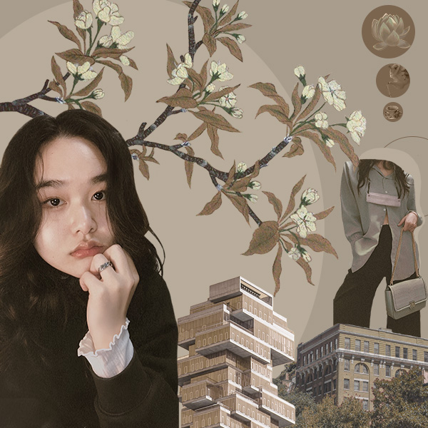

I selected photographs that best describe myself while also complementing the overall composition. I've been enjoying painting since I started two years ago, therefore I utilized two of my favorite paintings, the lotus flower, and the flower branch. The photos of the buildings and the teapot with the cup are actual photos that I took since I enjoy photography. I've always been interested in fashion, so I wanted to feature it here. I intended to keep the image monochrome to convey the simplicity and peacefulness that are traits of my personality. This trade may also be seen in my selfie. The most difficult aspect for me was keeping it simple yet not allowing too much negative space. So I experimented with various photos and placements. Overall, I think I performed okay, but I'm sure I can improve.

My vector image
For my vector image project, I had a bit of a hard time choosing what was the best thing that represented me. Then I remembered my love for the lotus flower, and that is because of the meaning that the flower has. The lotus flower is the only flower that can survive in any type of weather, so it is one of the oldest flowers we have. Therefore, this type of flower represents me as a person being able to go through different types of environments/situations without giving up. I chose three colors which are green, blue, and purple. Green is for nature and a new beginning referring to my love for nature and new paths that will lead me to a brighter future. Blue is for the calmness I always try to hold onto, so I do not lose myself. Lastly, purple is for creativity.
Audio
I originally recorded myself cooking, but because of technical issues, I had to use other recordings that were not from me. Yet, I still wanted to be cooking audio since my original idea was that. I love cooking even more when it's a new recipe or it's something I have craves of. Since my life has been getting so hectic, moments like this are special to me, so I wanted to capture one of them. This project was a bit hard for me because I don't usually do any type of audio related projects unless it's a video, but I learn a lot.
Gift Animation
Gift animation was created with After Effect.
Serene 10-sec Animation
I chose to do an animation about feeling calm/serene because that's how I want to be in stressful situations. I decided to go for a traditional Chinese concept to honor my Chinese inheritance, and because of the religion Buddhism, they are all about being calm and collected. However, I'm not religious, but my family is so that's how I learned.
Podcast
For this project, I decided to make a podcast and talk about mental health/suicide. The reason I want to talk about this subject is that I've seen a lot of cases recently, and I feel like people don't pay much attention to this.
3D Fairy City
I grew up with my mom who's a fairy lover, so naturally I ended up loving them. As a child I thought fairies lived in colorful mushrooms and this is where I got my inspiration from.
My Hero - Digital Design
For my digital design I had to honor my hero, so I chose my mother. She is inspiration to become someone who loves and gives to others.